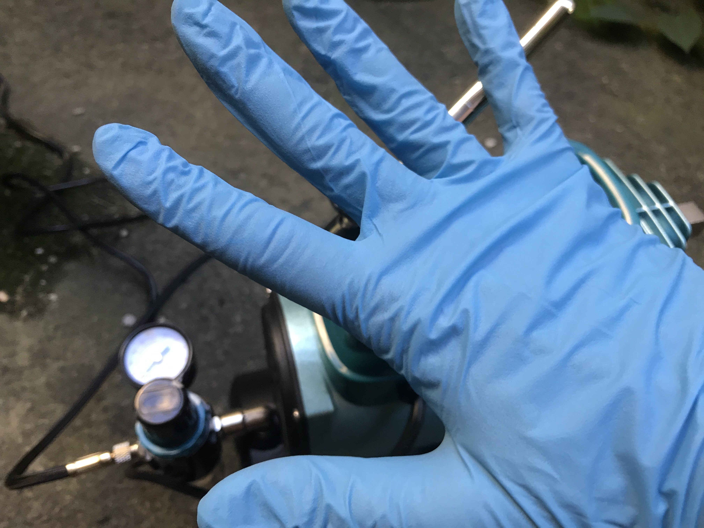
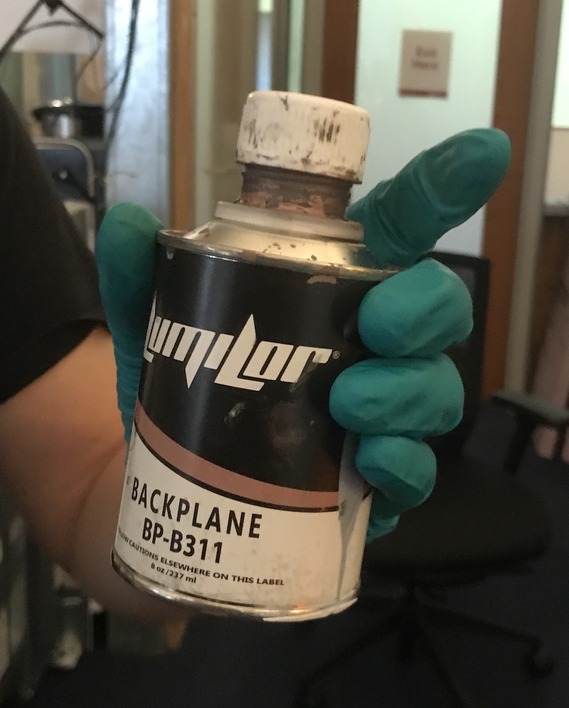
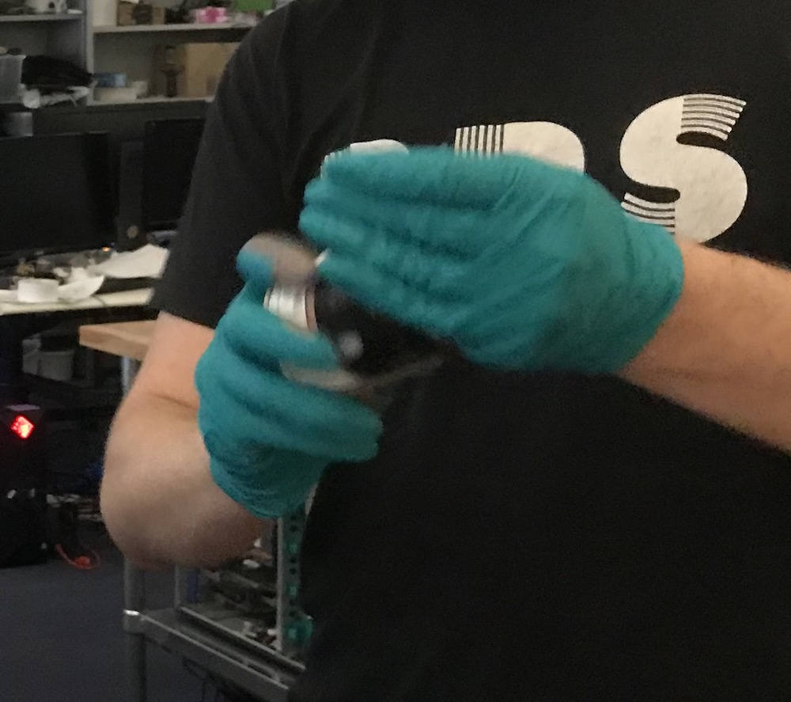
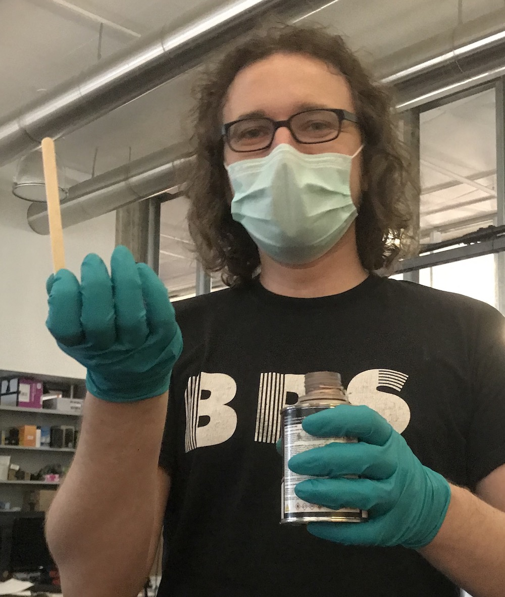
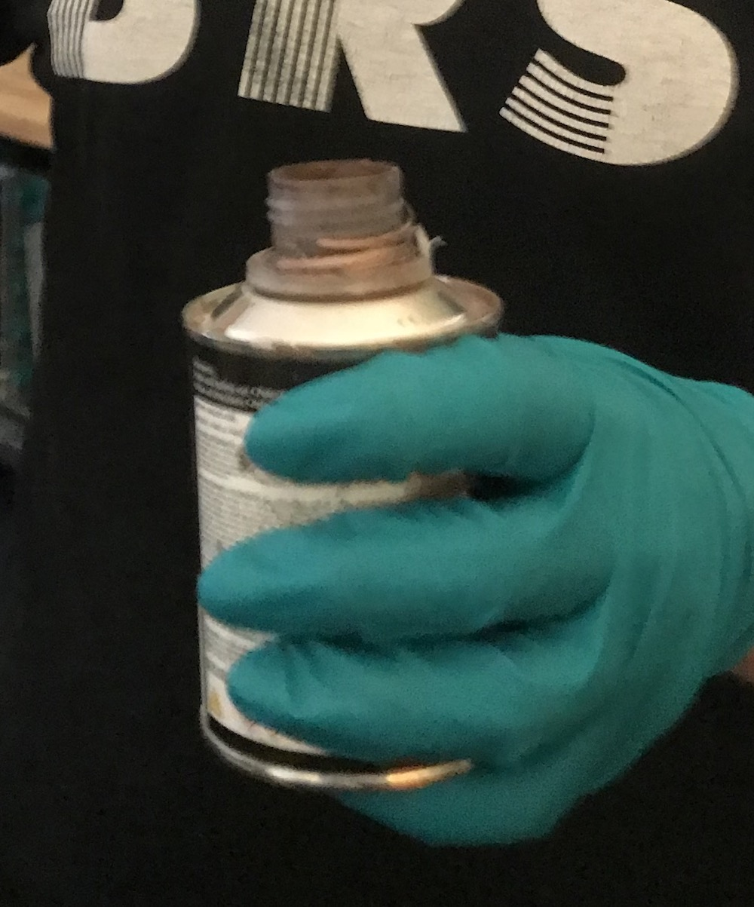
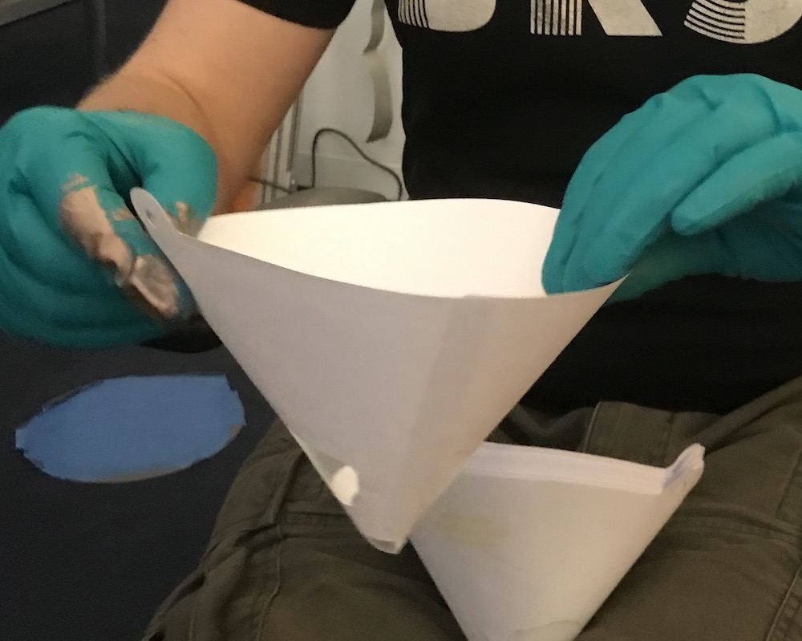
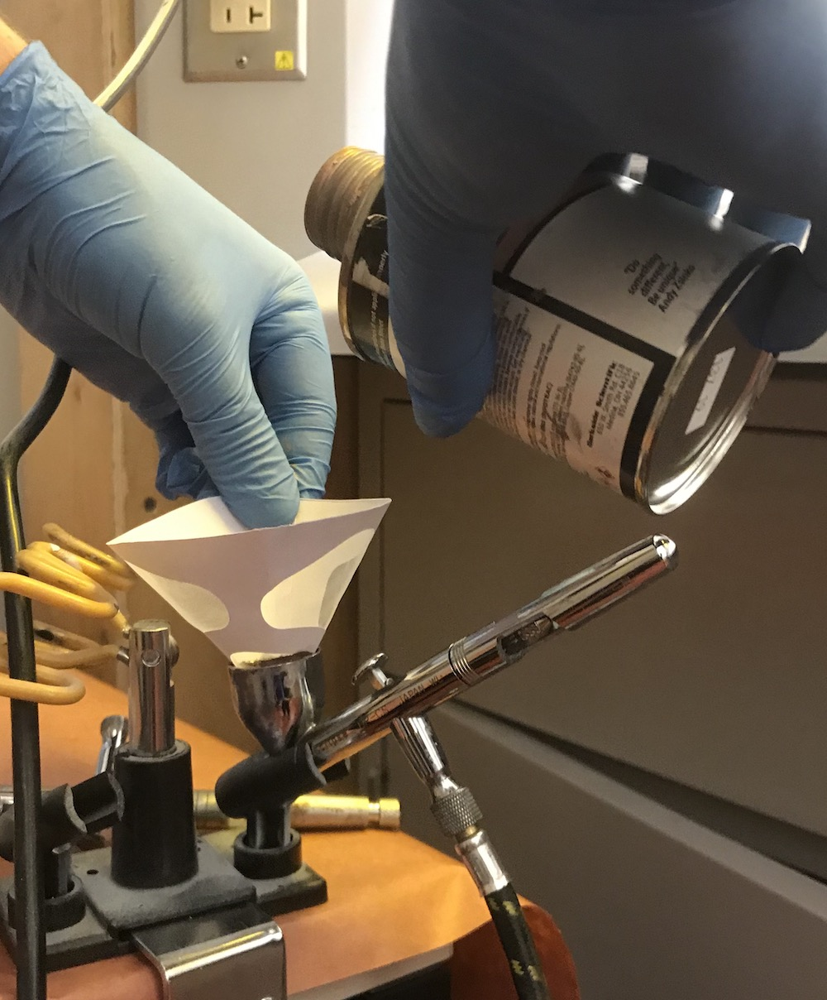
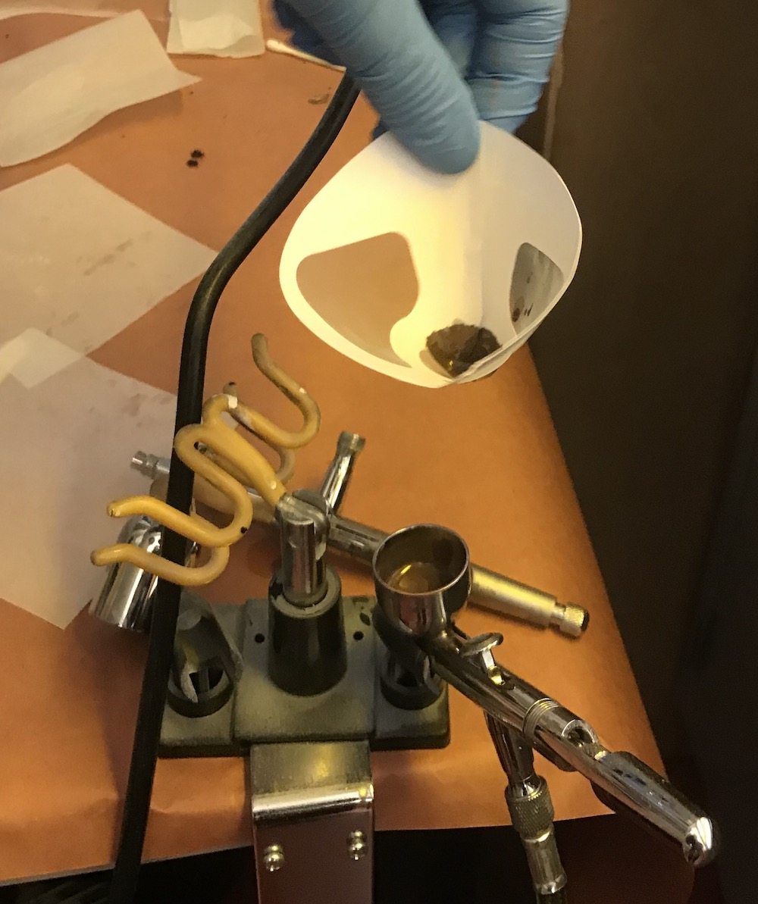

6.810 Engineering Interactive Technologies (fall 2020)
Preparing the Spray Material (Shaking, Filtering)
Before Starting to Prepare Inks: Put on Gloves
Please never touch an ink container or the inks directly with your hands.
Touching the ink can lead to some particles being taken up through your skin, so we want to avoid this at all times.

Shaking the Ink Cans to Dissolve Particles
The inks we need come in these cans.
Before you can use them, you need to shake the ink for at least 2-3 minutes.
Otherwise the particles separate and you will either clog the airbrush up or the sprayed liquid is not performing its function at all (e.g. if all copper particles are at the bottom of the can, the copper layer will not be conductive).
Let's shake the can for 2-3 minutes.


Checking if All Particles are Dissolved
To double check that nothing is at the bottom of the can anymore, use a wooden stick. Put the wooden stick inside the can and see how the consistency is when you pull it out. If you still see any particles or clumpy parts you definitely need to shake some more.


Filtering the Inks
We can still not 100% be sure that all the particles are dissolved.
Therefore, we use a filter (100 micron) to pour the ink through to make sure that really nothing enters the airbrush that shouldn't enter it.
Before you use the filter, cut off the top area that you don't need and that makes the filter unnecessary bulky.
We only need the part at the bottom that has the 'fabric' filter net.
Fill the tank until about 2/3rds or less with ink.



Now you are ready for spraying.
Continue reading here.